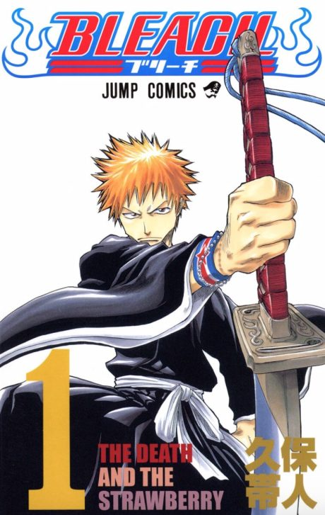

Manga continues fromCh. 661
Anime
Manga continues fromCh. 661
Anime
MangaBleach
BLEACH
AniList7.9
Animeter—
5 seasons414 ep
MangaCh. 661
Anime finished. Where does the manga pick up?
Start at Chapter661
Part 3 stops partway through Chapter 661. Part 4 is airing now and its finale (26 Oct 2026) is expected to reach the end, so this point will move.
1479661686 end
Bleach (2004)TYBW Parts 1–3Start reading here
Sources: Sportskeeda, Wikipedia